VISUALIZACIÓN DE DATOS ¶
La visualización de datos permite resaltar sus principales características. El análisis estadístico solo se puede llevar a cabo si está bien presentado. Hay diferentes formas de presentar los datos:
-
Textual
-
Tabular
-
Gráfica
La representación gráfica es la manera más atractiva y fácil de entender.
Herramientas de visualización¶
Python cuenta con numerosas librerías para hacer visualizaciones como Matplotlib, Seaborn, Folium, Bokeh, Plotly, Altair,...
Matplotlib es una de las más importantes, permite crear gráficos de calidad en 2D y exporta visualizaciones a los formatos más comunes (PDF, SVG, JPG, PNG, BMP, GIF,...)
Seaborn es una interfaz de alto nivel que funciona sobre Matplotlib y la complementa, permite visualizaciones más atractivas y complejas que son estéticamente más agradables.
Tipos de visualización¶
Existen muchos tipos de diagramas apropiados para diferentes objetivos:
-
Diagrama de barras (ranking)
-
Histograma (distribución)
-
Diagrama de densidad (distribución)
-
Diagrama de líneas (evolución)
-
Diagrama de dispersión (correlación)
-
Mapa de calor (correlación)
-
Diagrama de caja (distribución y ranking)
-
Diagrama de enjambre (distribución)
-
Diagrama de violín (distribución)
-
Diagrama de árbol (todo-parte)
-
Nube de palabras (ranking)
* Diagrama de barras (Bar chart)¶
Son útiles para visualizar distribuciones de valores discretos o categoriales. Representa gráficamente la comparación entre categorías de datos.
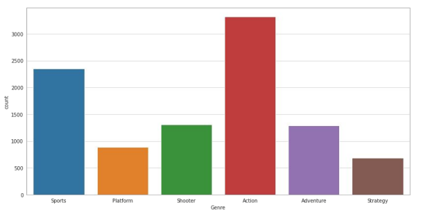
* Histograma (Histogram)¶
Es un tipo de gráfico de barras para visualizar distribuciones de valores numéricos. Indica el número de observaciones que caen dentro de un rango de valores (bin)
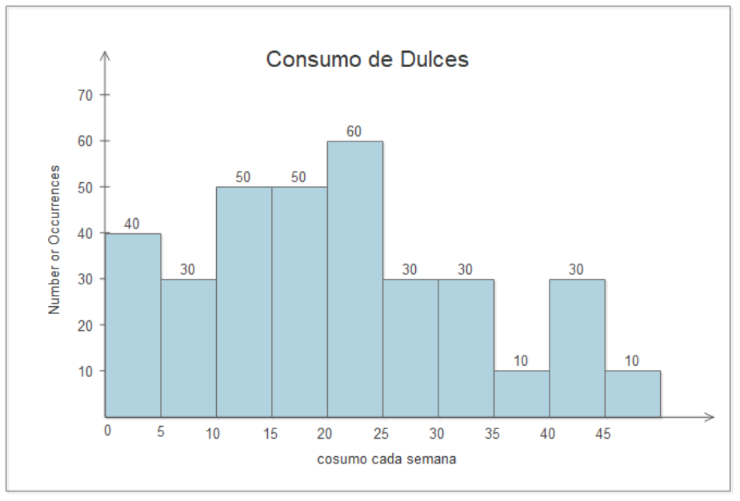
* Histograma vs Diagrama de barras¶

* Diagrama de densidad (Density plot)¶
Es una variante del histograma que usa un kernel gaussiano para visualizar los valores. Ofrece una mejor visión de la forma de la distribución.
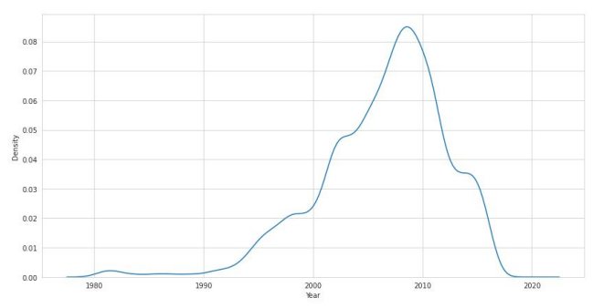
* Diagrama de líneas (Line chart)¶
Es muy útil para visualizar tendencias.Muestra los datos como puntos unidos por líneas.
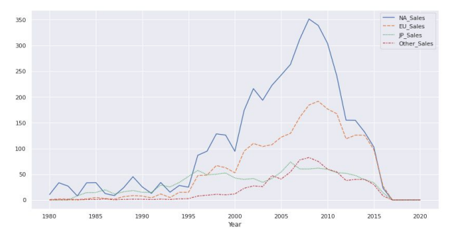
* Diagrama de dispersión (Scatter plot)¶
Se utilizan para identificar relaciones, patrones o tendencias entre dos valores numéricos. Visualiza agrupaciones de datos, identifica outliers y explora correlaciones.
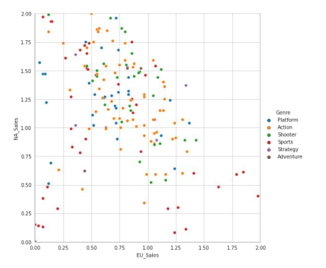
Dos atributos están correlacionados si uno implica el otro:
-
Positiva: cuando uno aumenta el otro también.
-
Negativa: cuando uno aumenta el otro disminuye.
-
Neutral: no hay correlación.
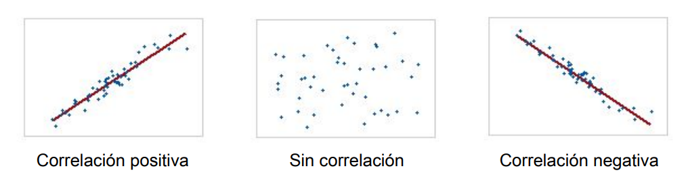
También podemos encontrar falsas correlaciones:
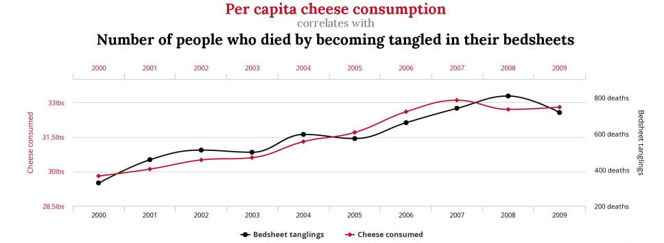
* Mapa de calor (Heatmap)¶
Visualizar datos mediante códigos de colores en dos dimensiones. Es útil para correlaciones. El tono y/o la intensidad indica cómo varían los datos en el espacio.
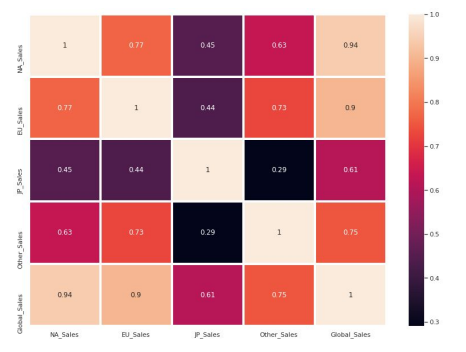
* Diagrama de caja (Box plot)¶
Describe grupos de datos numéricos mediante cuartiles. Es útil para datos que no siguen una distribución normal.
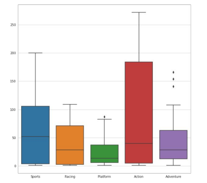
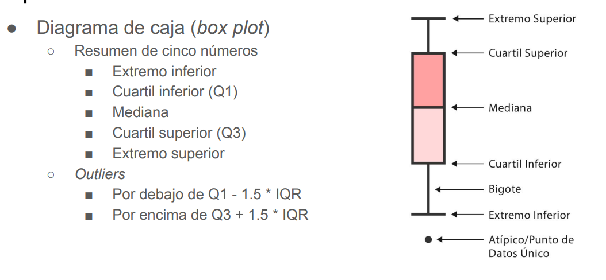
* Diagrama de enjambre (swarmplot)¶
Permite visualizar los puntos directamente cuando tenemos pocas muestras. Se puede usar en combinación con los diagramas de caja para ver el número de muestras.
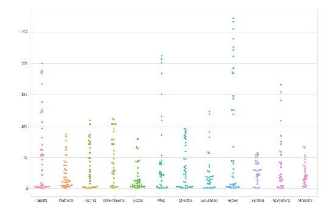
* Diagrama de violín (Violin plot)¶
Proporciona la información de un diagrama de caja y además la distribución de valores. Adecuados cuando tenemos muchos valores y no se pueden visualizar individualmente.
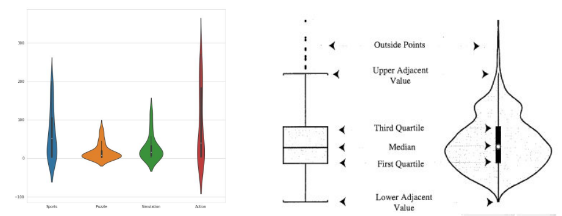
* Diagrama de árbol (Tree map)¶
Muestra datos jerárquicos como un conjunto de rectángulos. Cada grupo se representa como un rectángulo cuya área es proporcional a su valor. Se pueden usar esquemas de color para representar varias dimensiones.
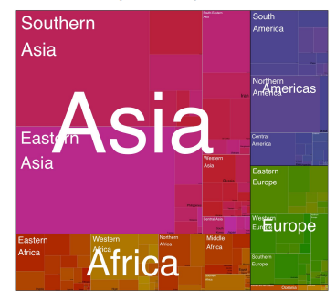
* Nube de palabras (Word cloud)¶
Representación visual de las palabras que conforman un texto. El tamaño es mayor para las palabras más frecuentes.